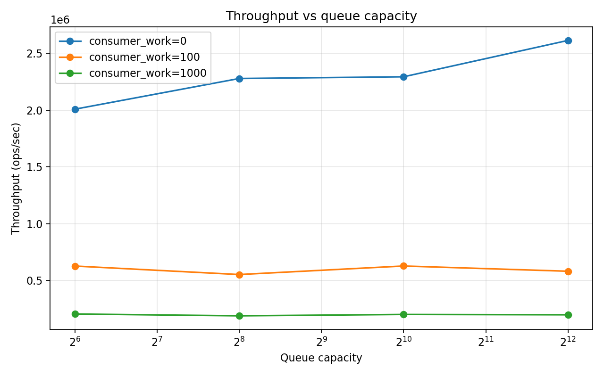
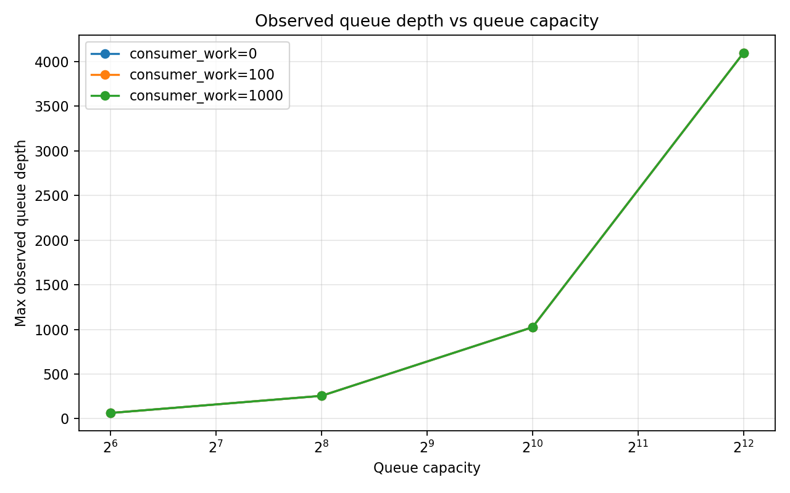
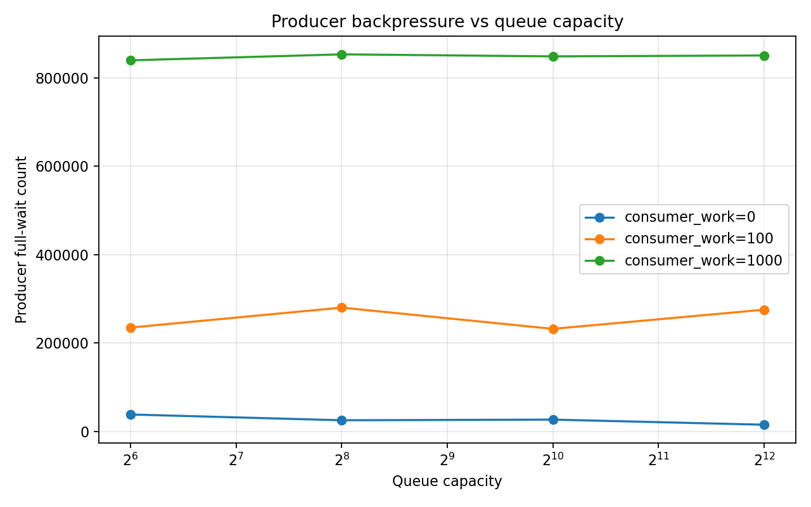
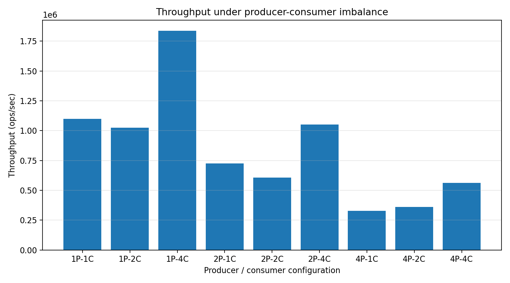
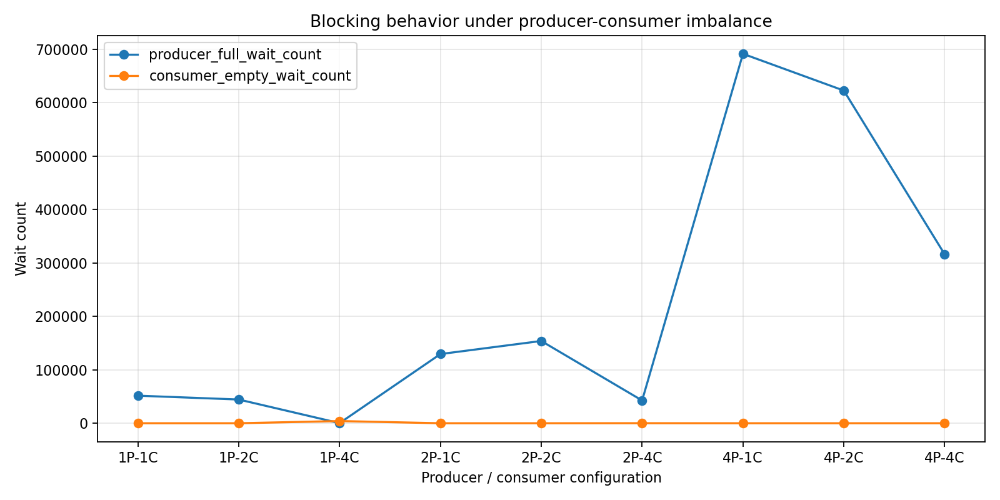

05-producer-consumer-queue¶
1. Why This Experiment Matters¶
In many systems, we insert a queue between components:
- Web servers handling requests
- Databases processing queries
- Streaming systems like Kafka
- Worker pools and task schedulers
The intention is simple:
“Let producers and consumers run independently.”
But what actually happens?
Does a queue improve performance?
Or does it simply hide problems?
This lab explores a classic setup:
- Multiple producers
- Multiple consumers
- A bounded queue in between
And asks a deeper question:
What does the queue reveal about the system?
2. The Setup¶
We implement a bounded blocking queue using:
- A ring buffer
pthread_mutexpthread_cond(not_full / not_empty)
Each experiment varies:
- Queue capacity
- Number of producers / consumers
- Consumer workload (to simulate slow processing)
We measure:
- Throughput
- Cost per item
- Blocking behavior (wait counts)
- Queue depth
3. First Surprise: Bigger Queues Don’t Always Help¶

When consumers are fast:
- Increasing capacity improves throughput
But when consumers are slow:
- Throughput barely changes
What this means¶
A queue only helps when the queue itself is the bottleneck.
Once computation dominates, increasing capacity does nothing.
A queue cannot fix a slow consumer.
4. The Queue Fills Up — And Stays Full¶

As capacity increases, the observed queue depth increases almost linearly.
Especially with slow consumers.
What this means¶
The queue does not stabilize at some "optimal level".
Instead:
It expands until it is full.
This is a critical insight:
A queue absorbs imbalance — but does not resolve it.
5. Backpressure: The Invisible Force¶

When consumers are slow:
- Producer wait count explodes
- Increasing capacity barely helps
What this means¶
The system pushes back.
This phenomenon is called backpressure:
- Consumer is slow
- Queue fills up
- Producers are forced to wait
Backpressure is not a bug. It is a fundamental system behavior.
6. The True Bottleneck Reveals Itself¶

Different configurations:
- 1 Producer / 4 Consumers → fastest
- 4 Producers / 1 Consumer → slowest
What this means¶
Throughput is governed by the slowest stage:
throughput ≈ min(producer rate, consumer rate)
Adding more producers does not help if consumers are the bottleneck.
7. Blocking Tells You Everything¶

- Too many producers → producer wait dominates
- Too many consumers → consumer wait dominates
- Balanced system → minimal waiting
What this means¶
Wait counts directly show where the bottleneck is.
You don’t need complex profiling.
Blocking behavior is the signal.
8. The Role of Queue Capacity¶
Queue capacity has three regimes:
Too Small¶
- Frequent blocking
- Lower throughput
Just Right¶
- Smooths small imbalances
- Best performance
Too Large¶
- No throughput gain
- Just more buffering
Bigger buffers don’t make systems faster — they make problems quieter.
9. Key Takeaways¶
1. A Queue Is Not a Performance Tool¶
It is a decoupling mechanism, not an optimizer.
2. Bottlenecks Dominate Everything¶
The slowest stage defines system throughput.
3. Backpressure Is Inevitable¶
And necessary for system stability.
4. Queue Capacity Has Limits¶
After a point, it stops helping.
5. Blocking Is Insight¶
Wait counts reveal system imbalance directly.
10. Real-World Implications¶
These exact behaviors appear in:
- Redis pipelines
- Kafka partitions
- Nginx worker queues
- Database connection pools
Understanding this model helps explain:
- Why systems stall under load
- Why adding threads sometimes makes things worse
- Why buffers grow but performance doesn’t improve
11. Final Thought¶
A queue sits between two worlds:
- The speed of production
- The speed of consumption
It cannot make them equal.
It can only expose the difference.
A queue does not solve performance problems.
It tells you where they are.